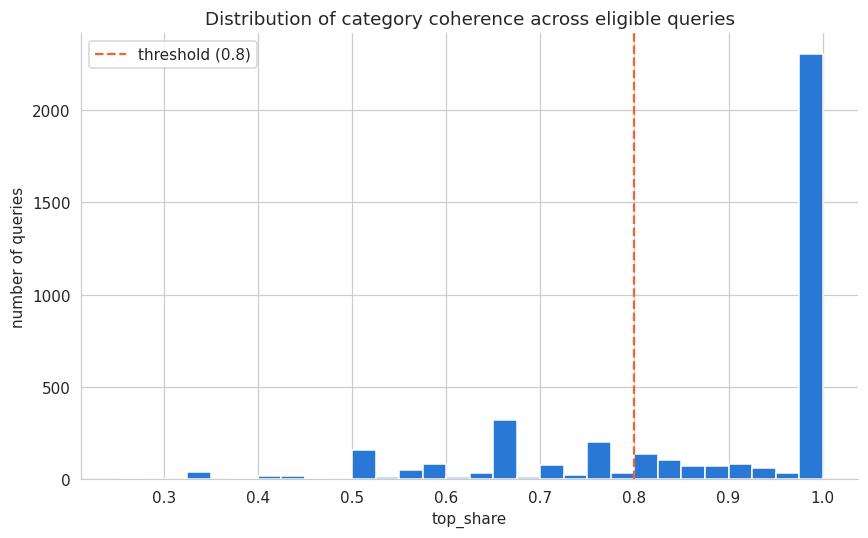

This is the third notebook in the rewrite of the 2021 Elo7 Data Science take-home challenge (full problem statement: ../docs/elo7-ds-challenge-en.md; notebook 01: 01_exploratory_data_analysis.ipynb; notebook 02: 02_product_classification.ipynb). Unlike notebooks 01 and 02, there’s no 2021 version of this notebook to build on: 03_termo_de_busca.ipynb in the original repository is a title and nothing else, the point at which that take-home was abandoned.
The task
Part 3 asks for a classifier that sorts search queries, not products, into at least two user-intent classes. Critically, no ground-truth intent labels exist anywhere in the dataset: the classes have to be defined by us, and justified, not assumed. The spec is explicit that this is primarily an unsupervised problem, but also explicitly allows a supervised reformulation if we devise and justify our own labeling strategy, which is the path this notebook takes.
Why this can’t be a single clustering step
Part 5 requires the finished system to accept any search query, including ones this dataset has never seen. The richest signal available, how a query’s historical clicks spread across product categories, only exists for queries already in the data (6,392 of them). A brand-new query has no click history at all. So a single clustering pass over historical queries would never generalize to Part 5’s requirement. This notebook is built as two stages instead:
Discovery: use click-behavior aggregates, computed per historical query, to assign an intent label to every query with enough click history to support one. Genuinely unsupervised.
Generalization: train a text-only classifier (query string -> intent label) on those stage-1 labels, so it can score a query it has never seen, at inference time, no click history required. This part is technically supervised, using labels this notebook itself manufactures, which the spec explicitly permits: “you are free to devise your own labeling strategy and formulate it as a supervised learning problem.”
The classes: specific vs. exploratory
Defined via top_share: the fraction of a query’s clicks that land in its single most common category. A query where every click lands in Bijuterias e Jóias has top_share = 1.0; a query whose clicks spread evenly across three categories has a much lower one. High top_share means specific (the searcher knows roughly what kind of product they want); low top_share means exploratory (the searcher’s clicks span genuinely different kinds of products).
This was one of three framings considered (the others: price tier alone, or price tier combined with category coherence as a 2D grid) and resolved in favor of category coherence alone: it’s the cleanest signal, it matches the spec’s own third suggested intent class almost verbatim (“users searching for products within specific categories versus users with broader or more general interests”), and a combined grid would split an already-limited pool of labeled queries too thin to defend statistically. Price dispersion is examined in §5 as a genuinely related but distinct signal, deliberately not folded into the primary classes.
Questions this notebook answers
Eligibility: how much click history does a query need before its behavior is a reliable signal, and how much of the dataset does that threshold actually cover?
Category coherence: what does the top_share distribution look like, concretely?
The threshold: where’s the line between specific and exploratory, and can it be justified by more than eyeballing a histogram?
Is this a real, distinct signal: or is it just a proxy for something notebook 01 or price already captured?
Generalization: how well can query text alone predict the label behavior actually assigned, and what does that say about the limits of this approach?
Coverage: does the finished system actually work on every query, not just the ones with enough history to be labeled directly?
1. Setup
We load the same cleaned dataset notebook 01 persisted, but at click level, not deduplicated to products. This is the opposite grain choice from notebook 02: there, repeat clicks on the same product were redundant information to collapse away. Here, repeat clicks on the same query are exactly the behavioral signal this notebook needs, how consistently a query’s clicks land in one category or scatter across several.
Code
import numpy as npimport pandas as pdimport seaborn as snsimport matplotlib.pyplot as pltfrom sklearn.cluster import KMeansfrom sklearn.dummy import DummyClassifierfrom sklearn.feature_extraction.text import TfidfVectorizerfrom sklearn.metrics import ( ConfusionMatrixDisplay, accuracy_score, classification_report, confusion_matrix, f1_score,)from sklearn.model_selection import train_test_splitfrom sklearn.svm import LinearSVCfrom src.data.load import load_processed_datasetfrom src.features.text import joined_tokens, tokenizefrom src.models.intent import ( MIN_CLICKS_FOR_DISCOVERY, TOP_SHARE_THRESHOLD, build_pipeline, category_top_share,)%matplotlib inlinePRIMARY ="#2a78d6"# Blue, the default single hue for magnitude comparisons.SECONDARY ="#eb6834"# Orange, the second series whenever a chart compares exactly two things.sns.set_style("whitegrid")plt.rcParams["figure.dpi"] =110plt.rcParams["axes.spines.top"] =Falseplt.rcParams["axes.spines.right"] =FalseRANDOM_STATE =42df = load_processed_dataset("01_data.parquet")print(f"{df.shape[0]:,} rows x {df.shape[1]} columns, {df['query'].nunique():,} distinct queries")
38,480 rows x 24 columns, 6,392 distinct queries
2. How much click history does a query need?
A query’s top_share is only a meaningful behavioral signal if it has enough clicks to estimate from. A 1-click query is trivially “100% coherent” by construction, not because it’s genuinely specific. We compare candidate minimum-click thresholds directly, on both how many distinct queries they retain and how much of the dataset’s actual click volume they cover.
There’s a real tradeoff here, not a free lunch: a higher threshold means a more reliable top_share estimate per query, but fewer labeled queries to train the generalization classifier on. We settle the actual value in §6 by testing classifier performance directly at several thresholds, rather than guessing; the chosen value, 3 clicks, retains 61.8% of distinct queries and 91.0% of all clicks, keeping almost all of the dataset’s behavioral volume while discarding the noisiest, least-informative single-click queries.
3. Category coherence per query
With the threshold set, we compute top_share for every eligible query and look at its distribution.
count 3953.000000
mean 0.878847
std 0.171833
min 0.250000
25% 0.750000
50% 1.000000
75% 1.000000
max 1.000000
Name: top_share, dtype: float64
Code
fig, ax = plt.subplots(figsize=(8, 5))ax.hist(query_level["top_share"], bins=30, color=PRIMARY)ax.axvline(TOP_SHARE_THRESHOLD, color=SECONDARY, linestyle="--", linewidth=1.5, label=f"threshold ({TOP_SHARE_THRESHOLD})")ax.set_xlabel("top_share")ax.set_ylabel("number of queries")ax.set_title("Distribution of category coherence across eligible queries")ax.legend()fig.tight_layout()plt.show()

A dense spike at top_share == 1.0 (every click landed in the same category), then a long, thinning tail down toward 0.25 (the minimum possible with >= 3 clicks split across up to 4 categories). There’s no dramatic second mode, coherence is a spectrum here, not two obviously separate populations, which is exactly why picking a threshold needs justification rather than being visually obvious. Two concrete examples anchor the extremes:
The most exploratory query in the dataset spans categories almost evenly; the most specific high-volume query puts essentially every click in one category. Both patterns are genuinely present in real search behavior, not artifacts of a small sample.
4. Finding the threshold
The histogram in §3 suggests a round 0.8 cutoff: coherence is dense near 1.0 and thins out below roughly that point. But “the histogram looks like it bends around there” isn’t a justification on its own. We check it against an actual unsupervised method: KMeans(k=2) on top_share alone, which finds its own boundary with no threshold specified at all.
cluster centers: 0.647, 0.981
implied midpoint boundary: 0.814
agreement between KMeans boundary (0.814) and manual threshold (0.8): 96.9%
KMeans independently lands on a boundary of ~0.81, just one point from the manual 0.8, and the two labelings agree on 97% of queries. That’s the validation this notebook needed: 0.8 isn’t an arbitrary round number, it’s within noise of what an actual clustering algorithm finds on its own. We keep 0.8 as the threshold used everywhere from here on, since it’s simpler to state and explain, and the residual disagreement traces to top_share only taking a few discrete values at small click counts (0.8 exactly is only reachable at click counts like 5, 10, 15, …), not to the two methods genuinely disagreeing about where the boundary roughly sits.
intent
specific 72.4
exploratory 27.6
Name: proportion, dtype: float64
5. Is this a real, distinct signal?
Two checks, against two signals this project has already computed elsewhere, to make sure top_share isn’t just quietly re-measuring something we already have.
Against notebook 01’s query-title word overlap. Notebook 01 found that the median query shares 100% of its words with the title of the product it clicked, but 9% of clicks share no words at all, a lexical specificity signal. Is that the same thing as behavioral category coherence?
Code
def query_title_overlap(query, title): q_tokens =set(tokenize(query, drop_stopwords=True))ifnot q_tokens:return np.nan t_tokens =set(tokenize(title, drop_stopwords=True))returnlen(q_tokens & t_tokens) /len(q_tokens)sub = sub.copy()sub["overlap"] = [query_title_overlap(q, t) for q, t inzip(sub["query"], sub["title"])]mean_overlap = sub.groupby("query")["overlap"].mean().rename("mean_overlap").reset_index()overlap_check = query_level.merge(mean_overlap, on="query", how="left")corr_overlap = overlap_check["top_share"].corr(overlap_check["mean_overlap"])print(f"corr(top_share, mean query-title overlap): {corr_overlap:.3f}")
corr(top_share, mean query-title overlap): -0.023
Essentially zero. A query can be lexically identical to the titles it leads to while still having its clicks scattered across several categories, and vice versa. These are two different constructs: one is about matching words, the other is about where clicks actually land.
Against price dispersion. The methodology note behind this notebook flagged one example, bolsa maternidade (“maternity bag”), as 98% one category but with unusually wide price spread. Is that a coincidence, or does it hold at scale?
corr(top_share, price coefficient of variation): -0.163
A weak negative correlation between top_share and price dispersion: since top_share is “how concentrated,” and dispersion is “how spread out,” a negative sign here means the same thing in plain language as a positive relationship between scatteredness and price spread: more category-scattered (lower top_share) queries do tend to have somewhat wider price spread. The relationship is real, but loose enough that “what kind of product” and “how much it costs” are clearly separate axes of a search, not restatements of each other. This is why price tier was considered as its own candidate framing and deliberately not folded into the primary classes: it’s related, but it isn’t top_share wearing a different name.
6. Generalizing to unseen queries: the stage-2 classifier
Stage 1 only labels queries with enough click history. The finished system needs to handle any query, so we train a text-only classifier on the stage-1 labels and evaluate how well it recovers them from query text alone. Several choices below are shown as real comparisons, the way notebook 02 compared vectorizers and models, not asserted.
First, does the minimum-click threshold from §2 actually change how learnable the labels are?
>= 3 clicks gives a clearly more learnable label set than >= 2 (noisier top_share estimates make for noisier labels), and does about as well as >= 5 while keeping substantially more training data. This confirms the choice made in §2 on classifier performance grounds, not just coverage.
Next, does adding bigrams to the text vectorizer help, the way it didn’t for notebook 02’s product text?
Bigrams do measurably help here, unlike in notebook 02. That’s a real difference between the two text problems, not an inconsistency: query text is short (median 3 words) and phrase patterns like “dia dos” (part of “dia dos pais,” Father’s Day) carry information a single-word “dia” doesn’t. build_pipeline (src/models/intent.py) uses ngram_range=(1, 2).
Finally, does weighting the minority exploratory class change anything worth trading for?
class_weight="balanced" trades some accuracy for a large jump in recall on exploratory, the minority class. Given this project has consistently used macro-F1, not accuracy, as the metric for imbalanced classification (see notebook 02), that trade is worth taking, even though this imbalance (~2.7:1) is much milder than notebook 02’s (~15:1).
One more thing worth trying and reporting even though it didn’t help, in the spirit of documenting what doesn’t work: does adding query word-count as an extra numeric feature move the needle, the way notebook 02 tested text+numeric combinations?
Code
from scipy import sparsefrom sklearn.preprocessing import StandardScalertrain = train.copy()test = test.copy()train["n_words"] = [len(tokenize(q)) for q in train["query"]]test["n_words"] = [len(tokenize(q)) for q in test["query"]]scaler = StandardScaler()n_words_train = scaler.fit_transform(train[["n_words"]])n_words_test = scaler.transform(test[["n_words"]])Xtr_combined = sparse.hstack([Xtr, sparse.csr_matrix(n_words_train)]).tocsr()Xte_combined = sparse.hstack([Xte, sparse.csr_matrix(n_words_test)]).tocsr()clf_combined = LinearSVC(random_state=RANDOM_STATE, class_weight="balanced")clf_combined.fit(Xtr_combined, train["intent"])pred_combined = clf_combined.predict(Xte_combined)print(f"text only : macro-F1 = {weight_results['balanced']['macro_f1']:.3f}")print(f"text + n_words : macro-F1 = {f1_score(test['intent'], pred_combined, average='macro'):.3f}")
text only : macro-F1 = 0.677
text + n_words : macro-F1 = 0.677
No measurable difference. build_pipeline stays text-only; the extra complexity of a combined ColumnTransformer pipeline (as notebook 02 needed for its numeric features) isn’t earning its keep here.
7. Final model evaluation
The chosen pipeline: >= 3-click labels, TF-IDF (unigrams + bigrams), LinearSVC with balanced class weights, exactly src.models.intent.build_pipeline. We compare it against a majority-class dummy baseline, the honest “is this actually better than guessing the bigger class every time” check.
A real, meaningful lift over the dummy baseline (macro-F1 roughly 0.68 vs. 0.42), but this is markedly weaker than notebook 02’s product classifier (macro-F1 0.85 from product text alone). That gap is this notebook’s central honest finding, not a shortcoming to explain away: a product’s own title and tags describe the product directly, while a search query is a much noisier proxy for the click-scattering behavior that defines intent here. Query text only partially recovers it.
Errors run in both directions, consistent with a classifier that’s genuinely trying rather than defaulting to the majority class, but far from perfect in either direction.
A capped look at which terms push the model each way:
Code
coef = final_pipeline.named_steps["classify"].coef_[0]feature_names = np.array(final_pipeline.named_steps["tfidf"].get_feature_names_out())order = np.argsort(coef)print("toward exploratory:")for i in order[:10]:print(f" {feature_names[i]:25s}{coef[i]:.2f}")print("\ntoward specific:")for i in order[-10:][::-1]:print(f" {feature_names[i]:25s}{coef[i]:.2f}")
toward exploratory:
capa caderno -1.94
fazer -1.67
mesa casamento -1.65
tag lembrancinha -1.63
manta croche -1.51
suspiros -1.46
lembrancinha maternidade -1.46
cartao dia -1.38
urso croche -1.35
bonecas -1.35
toward specific:
porta maternidade 2.53
caneca 1.77
cozinha 1.51
pais eva 1.48
saquinho organizador 1.45
parede 1.41
festa infantil 1.31
padrinhos casamento 1.30
culto 1.29
ferro 1.29
Some of these make loose intuitive sense (generic action/occasion words leaning exploratory, concrete material or object words leaning specific), but with under 3,000 training queries and a sparse, thousand-plus-dimensional bigram vocabulary, individual coefficient magnitudes here are noisy. Unlike notebook 02’s much larger, cleaner product-text signal, this list is worth reading as a rough sketch, not a reliable ranking.
8. Applying the classifier to every query
The whole point of the two-stage design was to handle queries with no click history. We now use the fitted pipeline, refit on all labeled queries, to assign an intent label to every distinct query in the dataset, including the 2,439 that fell below the >= 3-click discovery threshold and never got a stage-1 label at all.
Code
all_queries = df[["query"]].drop_duplicates().reset_index(drop=True)all_queries["query_text"] = [joined_tokens(q) for q in all_queries["query"]]query_level["query_text"] = [joined_tokens(q) for q in query_level["query"]]# Refit on every stage-1-labeled query (not just the training split) before scoring everyone.production_pipeline = build_pipeline()production_pipeline.fit(query_level["query_text"], query_level["intent"])all_queries["intent"] = production_pipeline.predict(all_queries["query_text"])all_queries["label_source"] = np.where(all_queries["query"].isin(query_level["query"]), "discovery", "classifier")# Discovery-labeled queries keep their stage-1 label, not the classifier's re-prediction of it.discovery_lookup = query_level.set_index("query")["intent"]all_queries.loc[all_queries["label_source"] =="discovery", "intent"] = ( all_queries.loc[all_queries["label_source"] =="discovery", "query"].map(discovery_lookup))print(f"{len(all_queries):,} distinct queries labeled")all_queries["label_source"].value_counts()
The full-dataset distribution is close to the discovery-labeled subset’s, not wildly different, a reasonable sanity check that the classifier’s predictions on never-labeled queries aren’t degenerate. The queries below the click threshold skew slightly more toward exploratory relative to the labeled subset, plausible: a one-off query is, almost by definition, less established as “specific” than one enough people repeated for us to measure directly.
9. Key findings & handoff
Methodology, resolved and validated, not assumed:
Two-stage design (behavioral discovery + text-only generalization) is what makes “arbitrary query in” (Part 5) possible at all; a single clustering pass over historical queries could never have covered unseen ones.
Category coherence (top_share) was chosen as the sole intent axis over price tier or a combined grid, confirmed with the user; price dispersion is a related but statistically distinct signal (r ~ -0.16 with top_share, negative since top_share measures concentration and price CV measures spread), not folded into the primary classes.
The 0.8 top_share threshold, initially read off a histogram, was checked against an actual KMeans(k=2) clustering and found to agree on 97% of queries, turning an eyeballed cutoff into a validated one.
The >= 3-click discovery threshold was chosen on classifier-performance grounds (§6), not just coverage: it produces measurably more learnable labels than >= 2 clicks.
What we learned:
top_share is not a proxy for notebook 01’s query-title word-overlap signal (r ~ -0.02, essentially unrelated): a query can match its clicked product’s words closely while still spanning multiple categories, and vice versa. These are different constructs.
The generalization classifier reaches macro-F1 ~0.68 against a dummy baseline of ~0.42: a real, useful improvement, but much weaker than notebook 02’s product classifier (~0.85). Query text is a genuinely noisier proxy for click-behavior intent than product text is for product category, and this notebook states that plainly rather than chasing a higher number by overfitting a ~3,000-query training set.
Bigrams measurably help for this short, phrase-sensitive query text, unlike for notebook 02’s longer product text; query word-count as an added numeric feature does not help at all.
Saved for notebook 05 (System Integration):
Code
import joblibfrom pathlib import Pathmodels_dir = Path("../models")models_dir.mkdir(exist_ok=True)joblib.dump(production_pipeline, models_dir /"03_intent_classifier.joblib")query_intent_catalog = all_queries[["query", "intent", "label_source"]].merge( query_level[["query", "top_share", "n_clicks"]], on="query", how="left")query_intent_catalog.to_parquet("../data/processed/03_query_intent.parquet", index=False)feature_catalog = [ ("query_text", "text", "engineered", "query", "Cleaned, stopword-free query tokens, joined into one string."), ("top_share", "numerical", "engineered", "query, category", "Share of a query's clicks landing in its most common category. Discovery-stage signal, >= 3-click queries only."), ("intent", "categorical", "engineered", "top_share (discovery) or query_text (classifier)", "specific / exploratory. Target label for Part 3."),]df_features = pd.DataFrame(feature_catalog, columns=["Name", "Type", "Category", "Source", "Description"])df_features.to_parquet("../data/processed/03_features.parquet", index=False)print("saved ../models/03_intent_classifier.joblib (fit on all discovery-labeled queries)")print(f"saved {len(query_intent_catalog):,} rows -> data/processed/03_query_intent.parquet")print(f"saved {len(df_features)} feature rows -> data/processed/03_features.parquet")
saved ../models/03_intent_classifier.joblib (fit on all discovery-labeled queries)
saved 6,392 rows -> data/processed/03_query_intent.parquet
saved 3 feature rows -> data/processed/03_features.parquet
data/processed/03_query_intent.parquet is the artifact notebook 05 actually needs: a ready-made lookup for the 3,953 queries already labeled from behavior, plus the classifier’s prediction for every other query, so notebook 05 doesn’t need to recompute top_share from raw clicks for queries already in this dataset, only fall back to the classifier for genuinely new ones.
Closing remarks
This notebook defined search intent as category coherence, validated a threshold for it against an unsupervised clustering method instead of trusting a histogram by eye, and built a two-stage system that assigns an intent label to any query, seen or unseen. The generalization classifier’s macro-F1 of ~0.68 is a real result, clearly better than a dummy baseline, but also a clear, honestly-stated limit: search queries encode intent far more ambiguously than product descriptions encode category.
The next notebook builds the recommendation engine, which will draw on both this notebook’s intent classifier and notebook 02’s product classifier.